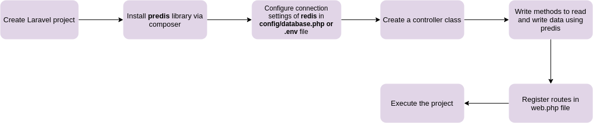
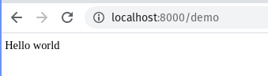
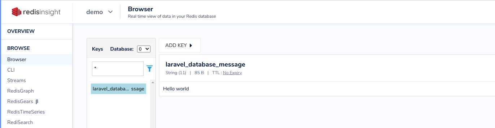

PREDIS
Github Link = https://github.com/predis/predis
A Redis client for PHP 7.2 and newer.
Redis is an open source, advanced key-value store. It is often referred to as a data structure server since keys can contain strings, hashes, lists, sets, and sorted sets.
To use Redis with Laravel one needs to install predis library, an alternate is also there which is phpredis
PREREQUISITES
Setup
Redison local using docker
docker run -v /docker/redis-data:/data -p 6379:6379 --name redis -d redis redis-server --appendonly yes --requirepass "qwerty"
Here,
`Host` : localhost,
`Port` : 6379,
`Password` : qwerty
For UI one can download
RedisInsight
INSTALLATION
Install the predis/predis package via Composer:
composer require predis/predis
WORKFLOW OF INTEGRATION OF LIBRARY
HELLO WORLD/POC
Create a new laravel project
composer create-project laravel/laravel predis-demo --prefer-dist
Install the
predis/predispackage via Composer:
composer require predis/predis
Configure redis connection settings in
.envfile
REDIS_HOST=127.0.0.1
REDIS_PASSWORD=qwerty
REDIS_PORT=6379
QUEUE_CONNECTION=redis
REDIS_CLIENT=predis
Create a UserController class
php artisan make:controller UserController
Lets store a key-value pair in the redis database using predis library
<?php
namespace App\Http\Controllers;
class UserController extends Controller
{
public function store(){
// setup redis connection
$redis = app()->make("redis");
// sets message to contian "Hello world"
$redis->set('message', 'Hello world');
// gets the value of message
$value = $redis->get('message');
print($value);
}
}
Register route in
web.phpfile
Route::get('/demo',[\App\Http\Controllers\UserController::class,'store']);
Execute the code
php artisan serve
Browser Output:
One can check the redis database
